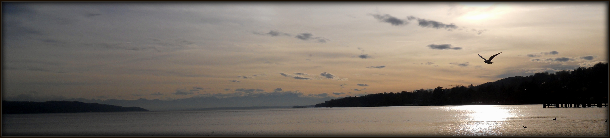

Web Mapping
Summer semester 2013
OpenStreetMap
Illustration of OSM
This is the illustration Open Street Map including my edits. I added chair lifts, cable cabins and lifts in Pra Loup ski resort in France.
Display bigger map
My personal opinion
- I think Open Street Map is absolutely usefull and interesting projects. Especially when they are used for emergency or crisis mapping. Furthemore I find the idea of self promoting and self realizing very usefull and necessary. I am convinced that it is good when people can have the impression that they can help the rest of the world.
- As I mentioned above the usability of Open Street Map is diverse. They can be used for emergency mapping in places that were destroyed by some (natural) disaster and where people need as actuall maps as possible. Next, OSM help people help other people, show their knowledge and experiences, promote themselves, and they also bring pleasure to people who are mapping.
- Personaly I have not contributed to OSM that often. There are two reasons: firstly, I do not have enough free time considering I have been alwyays bussy with my studies. And I do not want to sit in front of my laptop during holiday time. The second reason is that I have no idea what I could edit and add to OSM. I come from large city where (almost) everything is mapped already and since I do not own any GPS tracker I never have oppoturnity to upload my tracks.
- I am not planning to contribute more to OSM contribute more to OSM in the future except joining some of the projects like Ushahidi that are interested in latest cases, news on trafficking and risk areas.
My OSM account
Since the area of Pra Loup migh not be updated that often I would like to show myedits in Open Street Map in picture bellow. You can also see the table of mu changesets and direct link to feed of my changes.
Link to my OSM account
Link to my changesets